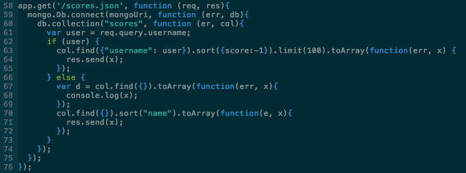
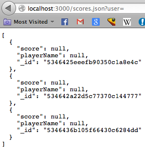
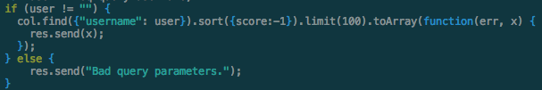
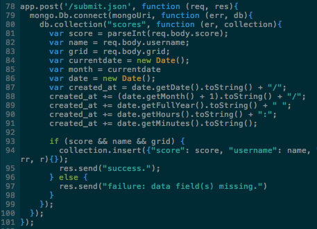
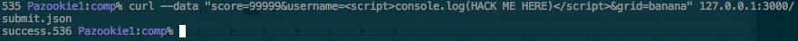
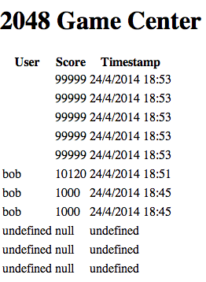
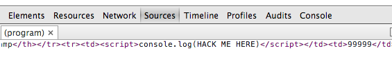

Comp20: Assignment 5 -- Security
Introduction
I have been hired to security-test a developer's version of the hit game: 2048. The developer has implemented a database of high scores to keep track of all users playing their game, but in doing so has left themselves vulnerable to many different types of attacks. I have been hired to locate security flaws, and advise on how best to address them.
Methodology
To assess the product, I have primarily focused on using Burp Suite, Tamper Data, cURL, and looking through the deveoper's code. To use Burp Suite, I configured it as an HTTP proxy server, and intercepted various requests to the developer's app. While accessing the product, I coud examine details about the requests being made and the responses being sent through the BS interface. Tamper Data provided similar access without its use as a proxy server, and allowed the introduction of several nefarious response headers. Lastly, cURL was used to examine different post requests that the app would allow.
Abstract of Findings
My findings could be organized into three main categories: unrestricted access to the database, insecure database insertion, and vulnerable HTTP headers.
To speak to the first category, with the developer's product, it is possible to query and generate a list of all items of the database simultaneously, even though this kind of detailed list should not be available to the user. This sort of list is used to make the homepage's table of high scores, but the under-the-hood details of all database entries should not be freely available. If you want to allow the querying of specified users in the database, but not the entire database, changes must be made.
Insertion into the database is insecure because the server does not check that the sent information is valid before storing it. In this way, anyone can insert whatever values they want into the database for the score, name, and grid fields, regardless of how improper the type of data is. This becomes even more of a problem when the data is rendered on the main page displaying the database, as spoofed data could be used maliciously to implement an intruder's own scripts.
Issues Found
Access to database
- HTTP Get Request for /scores.json does not validate username. Bad programming practice.
- Found in server code in app.js file, lines 81-83.
- Severity: Medium. Although all database entries can be freely accessed, the information stored in the database is relatively innocuous at this time. If the database is ever modified to contain passwords, usernames, email addresses, phone numbers, etc. this would be a high severity issue.
- I found this problem by looking through the developer's app.js code. I recognized that there was no parameter validation when querying the database, which then prompted me to try to break the /scores.json get request.

- Proof of vulnerability. 1. Screen shot of querying the database with a empty string for username. Returns all database entries.

- Resolution of issue: I resolved the issue by checking to make sure the username field of the query isn't empty, and if it is, the server responds that the parameters were not accepted.

Insecure database insertion.
- Database Injection
- Found in app.js in app.post(''/submit.json'), lines 88-91.
- Severity: High. Being able to inject whatever you want into the database is a very serious issue, especially because database entries are rendered onto the high scores page. In this way, one could add malicious scripts into the database, which then get interpreted as Javascript later on when the page is rendered.
- I found it by looking through the app.js code. I recognized that there is no input validation before inserting the post body parameters into the database.

- Here, I have injected artificial scores using curl with a very high score, the username as a script element, and the grid as nonsense.



- To resolve this issue, I would first eliminate all angle brackets from database queries, thus rending script injections useless. Secondly, I would validate that the username parameter was a valid string, and the grid object was a valid JSON that also contained no angle brackets.
Denial of Service Attack
- Limited database resources through MongoDB hosted on Herokuapp
- The location of this security flaw is somewhat nebulous, as it is tied to the limitations of the Mongo server through the hosting of Herokuapp.
- Severity: Medium. While this issue could be exploited to deny the database resource to the users of the app, it is not all that worriesome, as smaller-market applications and websites do not usually receive enough attention for someone to want to bring the whole service down. These kinds of attacks typically target larger institutions or websites, and services such as Bank of America, Amazon, Comcast, and have been targeted in recent months.
- This issue was found just by researching the limitations of MongoDB used in conjunction with Herokuapp. As Heroku hosts apps for free, it was safe to assume the resources and services they offer would not be unlimited as far as bandwidth, space, or computing power. It is exactly because of these reasons that the developer's 2048 gamecenter is vulnerable.
- The vulnerability is detailed on the Mongolab add-on section of Heroku.
- As large institutions still struggle with Denial of Service attacks, there is no easy way around this vulnerability. Fortunately, it generally takes a lot of controverstial attention for someone to want to target a service with a DOS or DDOS attack, and the 2048-GameCenter is rather innocuous in its aim.
Conclusion
Future consideration could include checking for vulnerabilities in request and response headers. Having X Frame Options set to AllowFrom allows potential clickjacking attacks, and one can set X-XSS-Protection to be disabled, which would also cause a large security flaw. In terms of cost, fixing the major flaws detailed above would not be too expensive -- the fixes are mostly small lines of code to check that certain inputs are of valid format. In terms of the denial of service attack, at this point no certain fix is in place, but hopefully the application will not receive enough controverstial attention to warrant such an attack. Overall, the security of this 2048 gamecenter is suspect, but not unfixable.